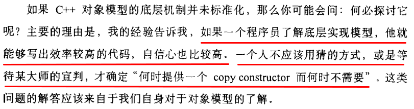
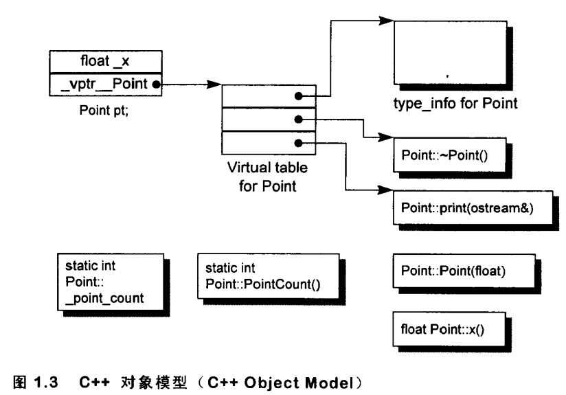
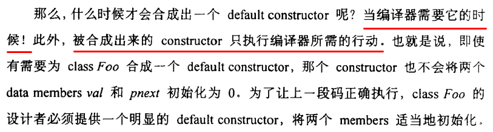
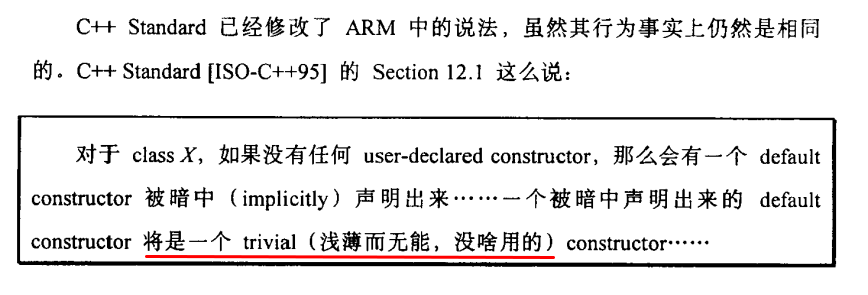
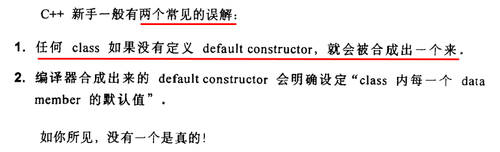

virtual function calls 一般而言是通过一个表格 （内含 virtual functions 地址) 的索引而决议得知。

类 Point 在机器中如何被表示
1
2
3
4
5
6
7
8
9
10
11
12
13
14
15
classPoint {
public:
Point(float xval);
virtual ~Point();
floatx()const;
staticintPointCount();
protected:
virtual ostream& print(ostream &os)const;
float _x;
staticint _point_count;
}

什么时候使用 struct 什么时候用 class
哪些操作支持多态
隐含的转化:
1
shape *ps = new circle();
virtual function 机制:
1
ps->rotate();
经过 dynamic_cast 和 typeid 运算符:
1
if (circle *pc = dynamic_cast<circle *>(ps)) {}
一个 class object 需要多少内存
nonstatic data members 的总和大小
加上任何由于 alignment 的需求而填补 (padding) 上去的空间
加上为了支持 virtual 而由内部产生的任何额外负担 (overhead)
什么时候才会合成一个 default constructor
 
编译器只会在以下 4 种情况，并且 class 自身没有定义 default constructor 的情况下，帮忙合成 default constructor：
带有 default constructor 的 member class object: 也就是说，虽然 class A 没有显示定义 default constructor, 但是 A class 内的成员变量 B, B 本身是提供显示的 default constructor 的，这种情况下会为 A 构造一个 default constructor。在该构造函数里会调用 B 的构造函数，当然只有在被调用的时候才会被合成出来。
带有 default constructor 的 base class: 也就是说，虽然 class A 没有显示定义 default constructor,但是 A class 继承自 B class, B 本身是提供显示的 default constructor 的，这种情况下会为 A 构造一个 default constructor.
带有一个 virtual function 的 class: 也就是说，虽然 class A 没有显示定义 default constructor,但是 A class 内有虚函数，既然有虚函数，那么在初始化对象的时候，需要初始化其中的指针 vptr 指向 vtable，所以这种情况下会为 A 构造一个 default constructor.
带有一个 virtual base class 的 class
同时需要注意，只有再必要的时候编译器才会合成出来，如程序中都没建该 class 的对象，故编译器肯定也不用合成出来。

合成 copy constructor
对一个 object 做明确的初始化操作:
1
2
3
4
5
classX {};
X x;
// 以 x 的内容作为 xx 的初值
X xx = x;
传递参数
1
2
3
4
5
6
externvoidfoo(X x);
voidbar(){
X xx;
// 作为参数传递
foo(xx);
}
返回一个 class object
1
2
3
4
5
X foo_bar(){
X xx;
// 传回一个 class object
return xx;
}
假设 class 设计者明确定义了一个 copy constructor:
1
2
X::X(const X& x);
X::X(const Y& y, int = 0);
那么在大部分情况下，当一个 class object 以另一个同类实体作为初值时，上述的 constructor 会被调用。
Size of union = size of the largest data type used:
1
2
3
4
5
6
intmain(){
union {
char all[13]; // 13
int foo; // 4
} record; // 16
}
1
2
3
4
5
6
7
8
intmain(){
#pragma pack(push, 1)
union {
char all[13]; // 13
int foo; // 4
} record; // 13
#pragma pack(pop)
}
Suppose you have this structure:
1
2
3
4
5
6
struct {
char a[3];
shortint b;
longint c;
char d[3];
};
Now, you might think that it ought to be possible to pack this structure into memory like this:
1
2
3
4
5
6
7
+-------+-------+-------+-------+
| a | b |
+-------+-------+-------+-------+
| b | c |
+-------+-------+-------+-------+
| c | d |
+-------+-------+-------+-------+
But it’s much, much easier on the processor if the compiler arranges it like this:
1
2
3
4
5
6
7
8
9
+-------+-------+-------+
| a |
+-------+-------+-------+
| b |
+-------+-------+-------+-------+
| c |
+-------+-------+-------+-------+
| d |
+-------+-------+-------+
In the packed'' version, notice how it's at least a little bit hard for you and me to see how the b and c fields wrap around? In a nutshell, it's hard for the processor, too. Therefore, most compilers willpad’’ the structure (as if with extra, invisible fields) like this: